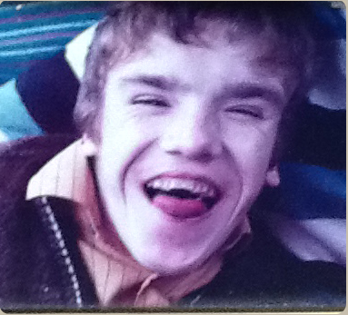
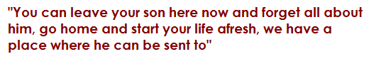
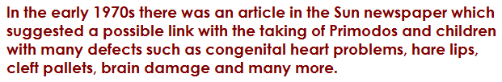

My son Garry was born in 1964. I'd been to see my doctor 9 months earlier and was given 2 tablets, one to be taken in the morning and one 12 hours later. I was told that if I didn't bleed then I was pregnant, and to our delight I was pregnant and had a very happy and uneventful pregnancy.
The birth was difficult, but we were blessed with a beautiful baby boy. However, I knew straight away something was not quite right. I didn't hear the baby cry, all I heard was a midwife saying 'it's a boy'. They quickly allowed me to look at him before rushing him off to the Special Care Baby Unit saying he had breathing problems. In those days, parents and family were not allowed inside the Baby unit because of the spread of germs, so for two days I was only allowed to see him through the glass window.
However, ten days later my husband collected me from hospital and we took our little boy home, but all was not well. He was unable to keep his milk down, there would be projectile vomiting after every feed, which meant he had to be fed a little amount of milk every two hours, and this went on for weeks. I was pleased when the Health Visitor called so that I could explain the difficulty I was having, but her response was of little help; just being told to increase the strength of his feeds. His swallowing did in fact cause problems for the rest of his life, only ever being able to swallow blended or finely mashed up food.
After a few months it became more apparent to us that he wasn't improving, he wasn't following the expected milestones for his age. He was very weak, had no muscle tone, his limbs were painfully thin, no attempt to weight bear, he was doubly incontinent. He hardly ever cried, couldn't speak or make any baby sounds at all. His face was becoming slightly more asymmetrical, a number of his fingers would not open fully, he couldn't straighten his feet, his testicles did not descend, he had a curvature of the spine. And as time went by the spine was causing more compression to his lungs, which in turn caused him to have recurrent chest infections and pneumonia.
In the early days he was so weak he couldn't change his position at all, wherever I lay him down that's where he would stay, but being a positive person, I did not in my wildest dreams think that he wouldn't get better given time.
As the months went by nothing changed, his swallowing didn't seem to improve although he did enjoy his food; he was unable to sit up unless propped up with pillows. It was impossible finding a chair that he would be comfortable in, he kept toppling over to one side as the curvature grew bigger.
When Garry was 18 months old we had an appointment with the paediatrician at our local hospital. My husband was unable to attend due to work commitment, so my mother came along for moral support. The paediatrician was a nice man but did seem to have a worried look on his face. Garry was smiling throughout, as he always did. Following an examination and a few tests later, what we were about to hear would change our lives forever. My mother and I had the shock of our lives when the doctor said Garry was not only physically disabled but also severely mentally handicapped, and would need care for the rest of his life. Always thinking that in time he would get stronger and improve with treatment, this was the worse news any mother wants to hear.
As time went on, doctors reassured me that any future pregnancies should be fine, I had another son and two daughters, all three normal healthy children, but this time I did not even think of going to the doctors to confirm pregnancy, in my heart I knew that taking those two tablets had damaged our son.
It was becoming more apparent that Garry's siblings were reaching their milestones very quickly, feeding well, walking, and talking. Doing all the things that Garry was unable to do, but despite all his problems he was a very happy boy, always smiling and at his happiest lying on the floor, which was the safest place for him, and listening to the soothing music of Jim Reeves.
When Garry was 2 years old it was suggested something needed to be done to correct his spinal curvature, so he was sent to an orthopaedic hospital for about two months lying on a plastercast mould which did nothing to improve his spine.
Following that, the doctors in their wisdom felt a Milwaukee splint was the answer. This was made of hard leather with a softer material on the inside, which was strapped around his hips, from where a metal bar with soft padding on the end extended up to his armpit. The idea was to eventually over time. push his curvature straight. However, this contraption looked like something from outer space. It was heavy and clumsy, and because Garry was incontinent it was impossible to stop the leather from getting wet and soiled; it was a constant battle trying to keep his skin from getting sore.
It became impossible for Garry to continue wearing the splint; what little movement he did have, propelling himself along the floor, came to a stop. So it was then suggested by the Orthopaedic team that he undergo major spinal surgery putting rods and wedges into his spine. The Consultant gave us the very hard choice of deciding whether he should have the operation or not. Both my husband and I thought very hard about it and decided in view of the fact that his deformities were extremely complex his quality of life would remain the same, and the odds of pulling through the operation was 50-50. No further treatment was suggested, it was felt nothing else could be done.
We plodded on caring for Garry as best we could, he was such a happy boy and loved being cuddled which made it all worth while. At nearly five years old Garry had his first epileptic fit, which was the first of many, medication didn't seem to control them fully. He sometimes had two or three full blown grand mal seizures in one day. It was very distressing for the family to see Garry in these fits, as we all loved him so much.
During these early years we had to make several trips to various hospitals including Alder Hey Children's Hospital in Liverpool, and the Orthopaedic Hospital near Shrewsbury. It was during his stay in the Orthopaedic Hospital that the Ward Sister accompanied by a Doctor called us into her office and said, "You can leave your son here now and forget all about him, go home and start your life afresh, we have a place where he can be sent to". Before she even finished her sentence my husband waded in with a resounding "NO, we're taking him home Now".
As the years went by daily life was very difficult, Garry was still in nappies, the chest infections continued, the seizures weren't controlled, and feeding was still a problem. He was also getting heavier which made it difficult to lift him up off the floor, and carry him upstairs to bed or for a bath.
However, Garry was nearly 8 years old when I discovered that a new hospital for adults with mental disabilities had opened only half an hour's drive from our home. I wasn't sure whether physically handicapped children were accepted there, but my mind was conjuring up thoughts of Garry being accepted, and I would think of it as a boarding school, Monday to Friday, and he'd be home at the weekends.
I wasn't going to let this opportunity go by, so contacted the relevant people and practically begged them to allow him to stay there Monday till Friday. The hospital was built on one level, about a dozen small separate units, and one of these units did in fact cater for the physically handicapped. I was over the moon; it meant that I could now devote more time to my other three children and still have Garry home at the weekends.
He seemed to be happy there, the staff would take him out around the beautiful grounds, the songs of Jim Reeves were still played for him and life went on like this for a number of years, Garry's spinal curvature grew much bigger making it harder for his lungs to expand, therefore more chest infections. Many times we had telephone calls to say he was having breathing difficulties, we would drive over always thinking the worse might happen.
Garry was still having his weekends at home. I would drive over and collect him on a Friday afternoon after picking up the other children from school, then take him back on a Monday morning. This arrangement worked well for years until it became noticeable that he wasn't settling as well when at home, we thought this might be because he missed the hospital routine and staff.
Years later the Government brought out a Bill called 'Care in the Community' which meant Garry would be placed in residential accommodation with carers attending to his needs 24hours a day. Fortunately, this accommodation was a bungalow approximately an hour's drive from our home.
He lived there for a number of years with two others of similar age. He was well cared for, having his own room which we decorated with his toys, a few ceiling mobiles, posters and photographs to make it homely and cosy.
He continued to have fits, still unable to walk or talk, feeding was still a problem, in fact as he got older his swallowing gradually got worse, frequently choking on his food. With help he did learn to hold onto a spoon and eat by himself of a sort.
The staff were good and very kind with Garry, he was such a loveable boy, everyone who knew him just adored him. Unfortunately, he continued to have chest infections with many emergency stays in hospital. Over time he did get physically stronger and a wheelchair was adapted with moulded padded plastic made to Garry's shape. This was wonderful, he learnt how to turn the wheels of the wheelchair, he didn't have the strength to push forward but was able to go backwards and get around the bungalow. He came along well, even being taken on holiday to Butlins with the staff for a few days.
His feeding and choking was becoming more of a problem and I had a call to say the Multi-disciplinary team, physiotherapist, dietician, district nurse, and the carers wanted a word with me. I met with them a couple of days later who informed me that it was becoming impossible to feed Garry, his choking when eating was becoming life-threatening and they felt the only answer was a peg feed, which meant a feeding tube inserted directly into his stomach. This, Garry would have hated, he loved his food, there was very little else for him to look forward to. It would mean no further food by mouth.
In the past when Garry was unwell I had always stayed with him overnight in hospital because I felt the nursing staff did not understand or had the time to attend to his needs. He couldn't tell anyone if he felt uncomfortable and needed his position changing, or was thirsty and needed a drink, people tended to walk past him not sure how to react.
Before arrangements were made for the insertion of the feeding tube, I had another phone call from the carer at the bungalow to say Garry had been taken to hospital but this time he wasn't responding to treatment. After all these years, was this the call I'd been dreading?
My husband and I rushed over to the hospital to find Garry lying unconscious in a side room. He had a saline drip keeping him hydrated. I didn't think he looked as ill as I'd seen him during previous hospital admissions. A nurse came in and said he wasn't responding to treatment, he had pneumonia; it was a matter of waiting to see what would happen.
I naturally stayed there with him overnight, the staff kindly put a reclining chair for me next to his bed. Garry slept and didn't move all night, his breathing wasn't laboured as it had been in the past and in the morning there was nothing I could do for him other than give him a little wash and make him comfortable.
That morning many family members came to see him, I think, all sensing that this could be the end. My son who was in the Air Force and stationed in South Wales managed to get leave but it was a 5 hour journey up to North Wales.
Garry's sisters, my husband and myself stayed by his side the whole day only leaving to grab a cup of tea. At almost 5 o'clock that afternoon Garry stopped breathing.... minutes before his brother arrived from South Wales which was devastating.
Garry was buried 5 days before Christmas 2001 at the age of 37 years.
How different his life would have been if I had not been given those dreadful tablets.
When Emma was born in 1971 the consultant who came to visit said she had a heart murmur, possible hip dysplasia and the obvious defect of improperly formed fingers and toes.
She had her first operation at 15 months which was devastating. It took place in Mount Vernon Hospital (a plastic surgery unit) and the babies were tied to their cots as one of them had fallen out and broken an arm. It took an hour to get to the hospital and an hour back. I visited twice a day and she screamed every time I left.
When she was 4 or 5 years of age, I heard children ask why her hands were like they were. Some children were less than kind. She had her next operation at 5 and another when she was 14. For this one she was flat on her back for a month as they had to separate the toes as the webbing was causing pain and distortion. She had to put her feet in silicone every day to help with healing. To this day her feet are still tender. Secondary school was difficult. She often didn't attend. She suffered with depression and was physically sick every day she did manage to go in. The depression has been recurring.
Her back has always given her trouble and about 2 years ago a lumbar disc disintegrated and she has had to battle with the NHS to see a back specialist. She has had several spinal injections but to no avail and for the last 6 months has been on morphine and co-codamol for the pain. This is the only way she is able to function. They have said the only other option is a fusion of the discs but with no guarantee of success, is irreversible and it could make things worse- so she has rejected this. I had to work from the time Emma was quite young and it has often been very distressing and frustrating to watch her in pain and know that there is nothing I can do. If only I knew then what I know now as I would never have taken those tablets. However, in those days I trusted my doctor and had no reason to believe she would give me something that would cause so much harm. I often wish it was me rather than her who had been affected.
I had my first daughter Lorraine in 1965. She was a perfect baby, 8lb 10oz. Then I moved house and to a different doctor - I think his name was Abrahams. I thought I may be pregnant so I went to the doctors and he gave me some tablets he said you will bleed or be pregnant.
9 months later I gave birth to my 2nd daughter Sherry. Sherry was only approx 5lb 7oz. I noticed she had a flat back on her head. She was a very quiet baby, she took her bottles fine but she would not take any food to her mouth or put anything to her mouth. I felt something was wrong and got an appointment to Great Ormond St Hospital. The doctors said she had spastic tenderises, they said she also had a weak eye but there was nothing that could be done. They tried a patch on her good eye to help the weak eye but it did no good. Sherry also had brain damage I was told.
In 1967 I had a miscarriage, I wasn't far gone again given the drug Primodos. Then I fell pregnant again, with my son Scott, born on 14 Feb 1968. He was average weight, but he was born with a damaged aorta and holes in the heart. A piece of something was missing and something that should have closed at birth did not. He also had a hare lip and cleft palette (it looked like he had a hole in his face). It was very hard to feed him the milk just kept coming out. The midwife came in and tube fed him. He was taken to Great Ormond Street hospital , they put a needle into his penis, and said he had hyperpiesia. They gave me a date to treat his hare lip etc but an infection at the hospital meant he had to go to Tamworth annex to GOH.
He had the operation to treat his lip but things went wrong and his heart stopped 3 times. They took him back to GOH and said we think you should have him christened. When we went to the hospital he looked ill. They then did tests and found out about the aorta and holes in his heart. He had a long operation to repair the aorta. He had a scar from the middle of his chest over his arm and up his back. When he came home they said he had a double hernia. They closed something (not sure what) which should have closed at birth. They replaced something which was missing. Scott was back in hospital many times ; hernia; testicles not down; colds etc.
Sherry still wouldn't eat, the doctors said we will get you into hospital, they forced her to eat. Sherry couldn't sit up for quite a while (18 months or so) and she was very late walking. She was in nappies for a long time. She started screaming a lot and would sit in her high chair and move it around screaming. She wasn't easy to deal with. She was attending the hospital outpatients.
When Scott was about 4 we were told his aorta needed to be done again - he always had blue lips and nails. He didn't play out much, he would get breathless. After the 9hr operation on his aorta the doctors said the holes must be closed soon, (this was Dec and the next May he had the holes done) (another 9hr operation).
In the early 1970s there was an article in the Sun newspaper which suggested a possible link with the taking of Primodos and children with many defects such as congenital heart problems, hare lips, cleft pallets, brain damage and many more.
I realised my 2 younger children, Sherry and Scott had many of the things mentioned. This was when the dangers of Primodos appeared in my life - it made me feel sick.
Schering's were the company giving out this drug as hormone pregnancy tests.
I was in touch with Marc Mildred (solicitor representing Primodos damaged children) and did things by post. Most of the meetings were in Manchester and I couldn't get there with 3 young children. Later I heard Schering's were taken to court but they won and I thought that will be the end of that.
Sherry didn't learn well , she has brain damage, became deaf around 6 to 7 yrs old. Her eye that was weak now has no sight. Her teeth are not good and her face is out of alignment making dental work difficult. She has lost her front teeth. She is on anti depressants and does not have a good life (her sister Lorraine fights daily to try to get care for her that is needed , which is an up hill struggle). Lorraine has now moved Sherry into a care home about 5 minutes from her. Scott didn't have a good life , he was often in hospital because of taking overdoses, he didn't want to live and was also on antidepressants. He was a loner and in his 30s said he had always believed he wasn't a man but was a woman. He had a sex change operation 3 years after living as Amy. Amy/Scott did not recover from the surgery and it was discovered that he had cancer on the 20 Sept 2006. Amy/Scott died on 18 Oct that year aged 38yrs. Bayer/Schering need to own up apologise and compensate for using myself, my children as guinea pigs.
1971: the words "Monster child" were written on my medical notes. My baby was born alive. I was not allowed to see her. I was drugged. My baby was taken away. I never saw her again. WHY?
1971: Anencephaly. Stillborn 2 weeks early. No funeral allowed. Not officially allowed to name her. My daughter was put in a coffin with a stranger. Searched for 18 years to find where her remains had been left. WHY?
1973: I was 16. Just married and excited about my first baby. Just before my baby was born the doctor said my baby did not have a properly formed head. She had no skull and no brain and would die at birth. I was then heavily sedated and my waters broken. I tried to wake up when my baby was born and begged to see her. They refused as her birth defects were too distressing to see. WHY?
1975: Aorta valve not working. My baby operated on immediately after birth. Operated again at 2yrs. 7 months. Died shortly afterwards. WHY?
1976: My daughter was born and the doctors told me the top of her head and top of her brain was missing. She was stillborn 3 weeks before full term. WHY?
Spina bifida. Hydrocephalus. Talipes. A very pretty baby. She died in front of my eyes when she was 4 months old. WHY?
My baby only had 3/4 of her heart developed. Deformed hand. Would be blind and deaf. She was beautiful with lots of dark brown hair. She died after 13 days. WHY?
My beautiful baby boy. Severely Mentally handicapped. Curvature of the spine causing compression on the lungs. Doubly incontinent. Could not fully open fingers or straighten his feet. Unable to walk or talk. Much loved and cared for until he died at just 37 year of age. WHY?
Some of the worst abnormalities seen by the Professor and his team. Hydrocephalus. Spina Bifida. Massive fluid in the brain prevented normal delivery. Did not survive the birth. WHY?
Hydrocephalus. No ligaments in her feet to hold the bones together. Incontinent. Seizures. Spinal surgery at 16. In a Wheelchair. 44 years old. I am 73. Who will look after her. WHY?
Radius missing in both forearms, so hands sat sideways to her arms. Extra finger attached to her thumb. One hip socket very shallow. Many operations between age 1 and 7. Uterus malformed and cervix not joined to the vagina Hip now completely dislocated and arthritic. WHY?
My Son lived for only one painful month. His arm was deformed and his hand was on the side of his arm. Duodenal atresia surgery at one day old. Heart defect. Annular pancreas. Missing kidney. Cardiac catheterisation 4 times, each time painfully resuscitated. Multiple skeletal abnormalities. WHY?
My lovely baby. Massive internal malformations. Oesophagus totally blocked. Kidneys malformed. Penis blocked by a membrane leading to oedema and several fits. Lived for only 3 heartbreaking weeks. WHY?
There is a Rare bone tumour in her arm, still growing. Extremely rare brain tumour. Sideways facing kneecaps. Horizontal veins in her arm. An extra rib. Costochondritis. Constant pain. WHY?